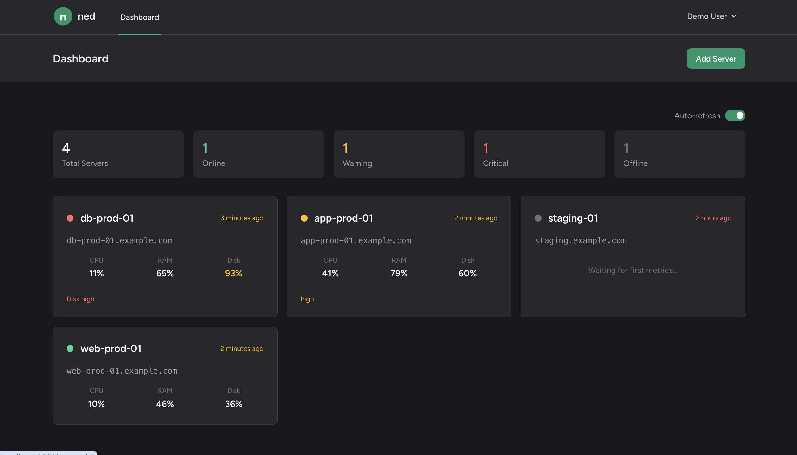
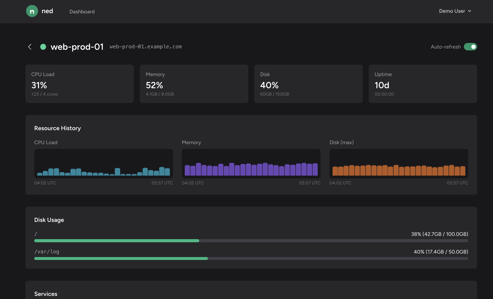
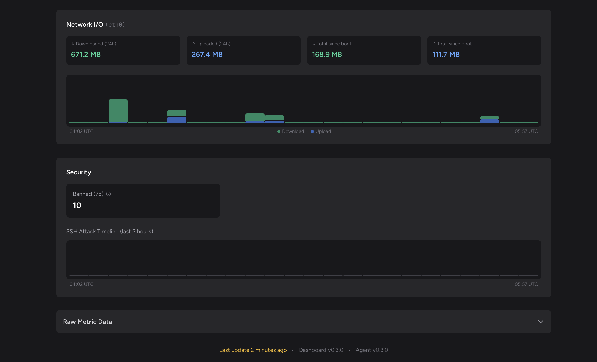
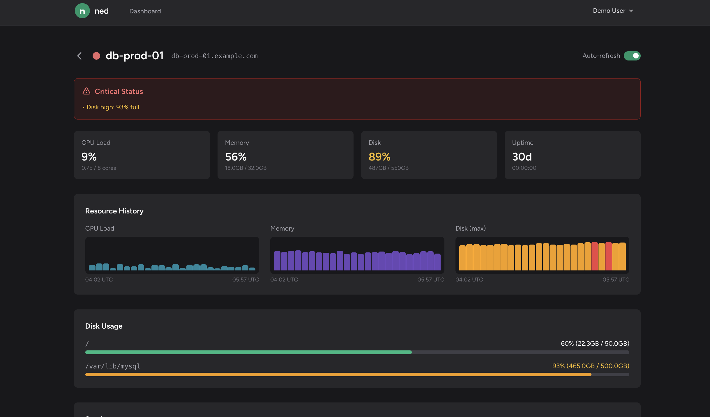
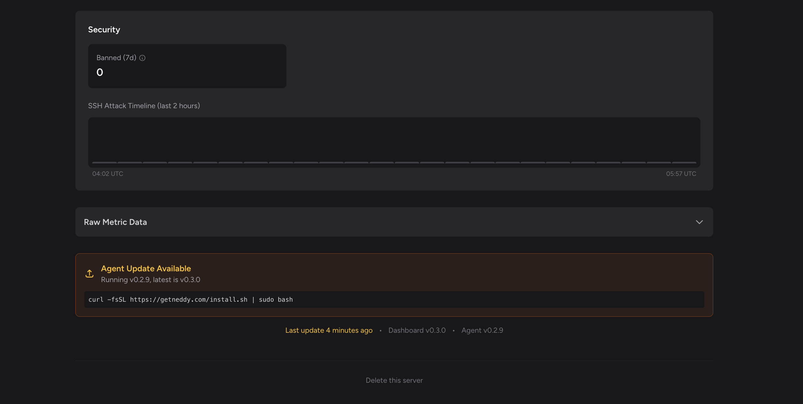

Screenshots
See what Ned looks like in action. All screenshots show demo data.
Dashboard Overview
See all your servers at a glance with status indicators and key metrics.
Server Detail View
Dive into individual server metrics with resource history charts, disk usage, and service status.
Network & Security Monitoring
Track network I/O, banned IPs from fail2ban, and security events.
Critical Alerts
When things go wrong, Ned makes it obvious. Red alerts, clear messaging, actionable info.
Agent Update Notifications
Ned tells you when agents need updating, with one-liner install commands.
